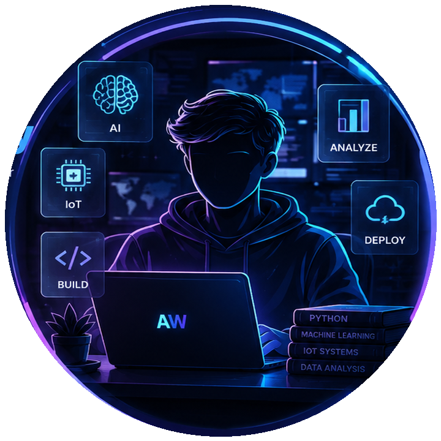

Ahmed Mohamed Wally
Artificial Intelligence & IoT Student
I build practical intelligent solutions across AI, data analytics, signal processing, embedded systems, and IoT — turning technical problems into useful, measurable outcomes.

Building intelligent
solutions with purpose.
Ambitious Artificial Intelligence student specializing in IoT, with a foundation spanning data, machine learning, NLP, signal processing, and embedded systems.
My Value
I combine analytical problem solving with hands-on engineering. My work covers the data lifecycle from cleaning and analysis to intelligent applications, while also connecting software with sensors and embedded systems.
Skills & Services
A practical technical stack aligned with AI, analytics, engineering, and connected systems.
AI & Machine Learning
Machine Learning, NLP, Deep Learning foundations, AI-driven problem solving.
Data & BI
Python, Pandas, NumPy, SQL, Power BI, Excel/VBA, data cleaning and ETL.
IoT & Embedded
Embedded Systems, sensor integration, IoT frameworks, circuit design.
Signal Processing
MATLAB, Fourier Transforms, ECG filtering and signal analysis.
Featured Projects
Three projects are documented in the CV. The fourth is clearly marked as a proposed project rather than falsely presented as completed work.
AWA — Alert Without Alarm
Intelligent security system using AI Agents and NLP to interpret hacker intent through command analysis and prioritize silent detection.
- Command-intent analysis
- Real-time threat assessment
- AI Agents + NLP
Biomedical Signal Processor
MATLAB-based ECG signal processor designed to reduce noise and improve signal clarity for analysis.
- ECG filtering
- Fourier Transform
- Noise reduction
Predictive Data Dashboard
Dynamic Power BI dashboard concept transforming complex datasets into clear visual insights for decision-making.
- Interactive visualization
- Data preparation
- Actionable insights
Smart Environment Monitor
A proposed IoT project combining sensors, embedded systems, and Python analytics to monitor environmental conditions and surface anomalies.
- Sensor data collection
- IoT monitoring workflow
- Python analytics
Education & Training
B.Sc. in Artificial Intelligence — IoT Specialization
Faculty of Artificial Intelligence, Menoufia University. Focus on Neural Networks, Digital Signal Processing, IoT Architectures, Data Structures, Logic Circuits, and Embedded AI.
Professional AI Diploma — Instant Academy
Training in Machine Learning, Deep Learning, and NLP applications.
Information Technology Institute (ITI)
Intensive focus on modern software development principles and architectures.
Have a problem worth solving?
Open to internships, freelance opportunities, collaborative projects, and technical conversations around AI, data, and IoT.